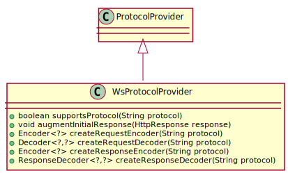

Class WsProtocolProvider
java.lang.Object
org.jdrupes.httpcodec.plugin.UpgradeProvider
org.jdrupes.httpcodec.protocols.websocket.WsProtocolProvider
public class WsProtocolProvider extends UpgradeProvider
A protocol provider for the WebSocket protocol.
The web socket protocol is an upgrade from the HTTP protocol.

-
Constructor Summary
Constructors Constructor Description WsProtocolProvider() -
Method Summary
Modifier and Type Method Description voidaugmentInitialRequest(HttpRequest request)Add protocol specific information to a request with anUpgradeheader field.voidaugmentInitialResponse(HttpResponse response)Add any required information to the “switching protocols” response that is sent as the last package of the HTTP and starts the usage of the new protocol.voidcheckSwitchingResponse(HttpRequest request, HttpResponse response)Check the101 Switching Protocolresponse for any problem indicators.Decoder<?,?>createRequestDecoder(String protocol)Creates a new request decoder for the protocol.Encoder<?,?>createRequestEncoder(String protocol)Creates a new request encoder for the protocol.Decoder<?,?>createResponseDecoder(String protocol)Creates a new response decoder for the protocol.Encoder<?,?>createResponseEncoder(String protocol)Creates a new response encoder for the protocol.booleansupportsProtocol(String protocol)Checks if the plugin supports the given protocol.
-
Constructor Details
-
WsProtocolProvider
public WsProtocolProvider()
-
-
Method Details
-
supportsProtocol
Description copied from class:UpgradeProviderChecks if the plugin supports the given protocol.- Specified by:
supportsProtocolin classUpgradeProvider- Parameters:
protocol- the protocol in question- Returns:
- the result
-
augmentInitialRequest
Description copied from class:UpgradeProviderAdd protocol specific information to a request with anUpgradeheader field.- Specified by:
augmentInitialRequestin classUpgradeProvider- Parameters:
request- the request
-
checkSwitchingResponse
public void checkSwitchingResponse(HttpRequest request, HttpResponse response) throws ProtocolExceptionDescription copied from class:UpgradeProviderCheck the101 Switching Protocolresponse for any problem indicators.- Specified by:
checkSwitchingResponsein classUpgradeProvider- Parameters:
request- the requestresponse- the response- Throws:
ProtocolException- the protocol exception
-
augmentInitialResponse
Description copied from class:UpgradeProviderAdd any required information to the “switching protocols” response that is sent as the last package of the HTTP and starts the usage of the new protocol.- Specified by:
augmentInitialResponsein classUpgradeProvider- Parameters:
response- the response
-
createRequestEncoder
Description copied from class:UpgradeProviderCreates a new request encoder for the protocol.- Specified by:
createRequestEncoderin classUpgradeProvider- Parameters:
protocol- the protocol, which must be supported by this plugin- Returns:
- the request encoder
-
createRequestDecoder
Description copied from class:UpgradeProviderCreates a new request decoder for the protocol.- Specified by:
createRequestDecoderin classUpgradeProvider- Parameters:
protocol- the protocol, which must be supported by this plugin- Returns:
- the request decoder
-
createResponseEncoder
Description copied from class:UpgradeProviderCreates a new response encoder for the protocol.- Specified by:
createResponseEncoderin classUpgradeProvider- Parameters:
protocol- the protocol, which must be supported by this plugin- Returns:
- the response encoder
-
createResponseDecoder
Description copied from class:UpgradeProviderCreates a new response decoder for the protocol.- Specified by:
createResponseDecoderin classUpgradeProvider- Parameters:
protocol- the protocol, which must be supported by this plugin- Returns:
- the response decoder
-